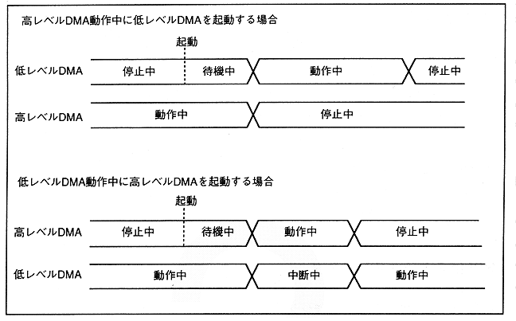
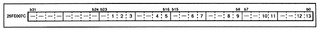

Also, when the interrupting and operating bit is 0, it is recognized that the DMA operation is stopped.
Figure 3.13 shows details of the access, interrupt, standby, and operation registers.
Figure 3.13 DMA status register (register: DSTA) Initial value 00000000H
